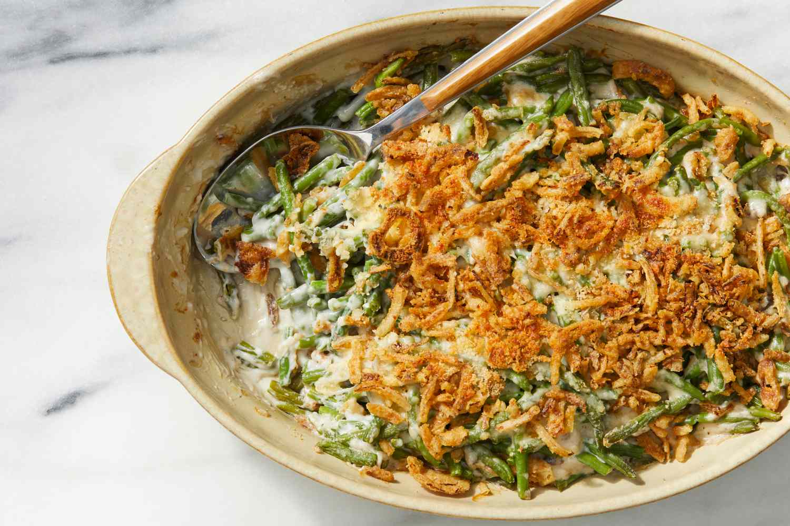

Home
Green Bean Casserole

Description
Green Bean Casserole: Traditionally a side dish made with a bowl of green beans covered
in cheese and breading. This creates a hard top layer with a creamy inside that makes
for a wonderful Thanksgiving dish.
Ingredients
- 1 lbs of green beans
- 1 Can of condensed cream of mushroom soup
- 1 Cup shredded Cheddar chesse
- 1 6oz can French-fried onions
- Optional: Half slab of salted butter
Steps
- Preheat oven to 350 degrees F
- Mix green beans and condesed soup together into microwave-safe bowl
- Microwave bowl until warm
- Stir 1/2 cup Cheddar cheese into the green bean mixture. Microwave for 2-3 minutes
- Transfer mix to a casserole dish. Spread even over the bottom and add remaining Cheddar over top. Then sprinkle with French-fried onions
- Bake in preheated oven until cheese is melted and onions just turning brown. About 10 minutes